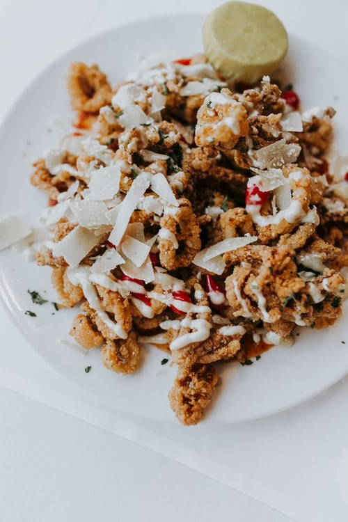
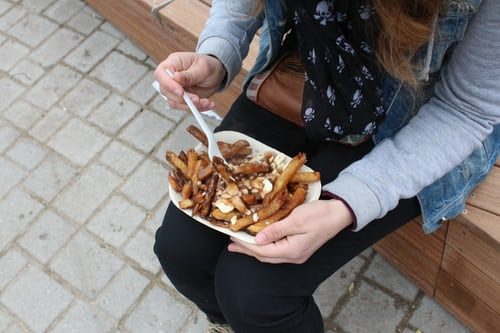
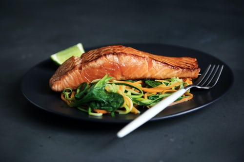
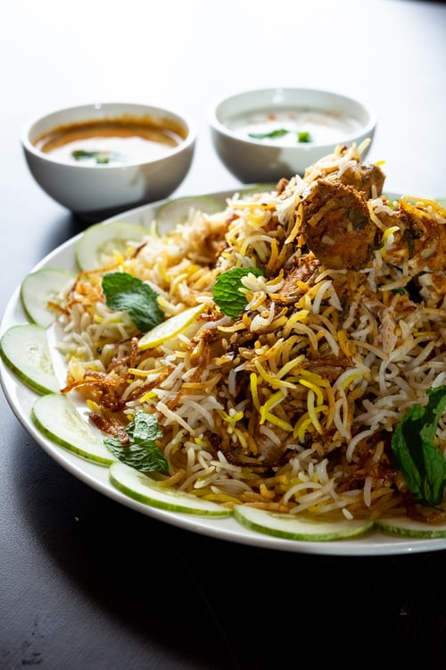
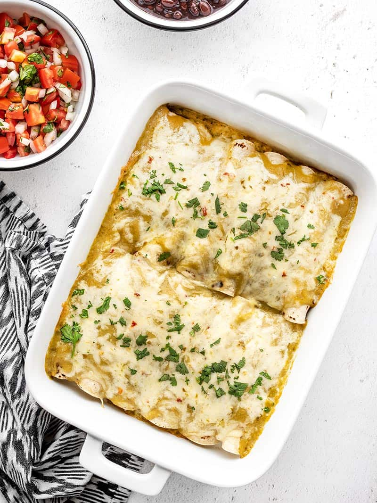
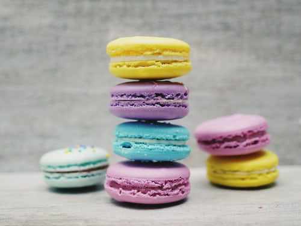
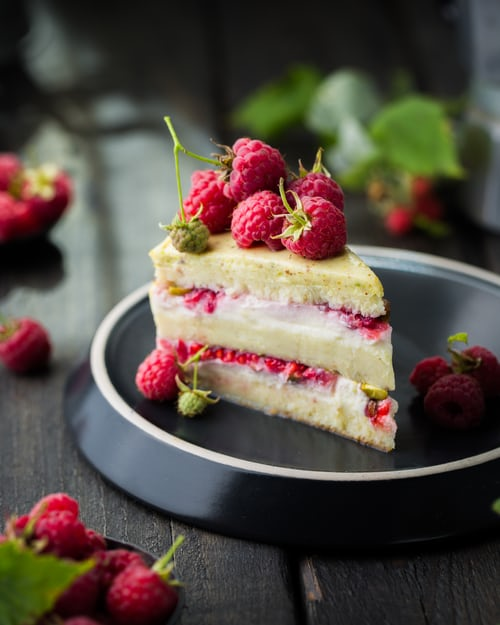
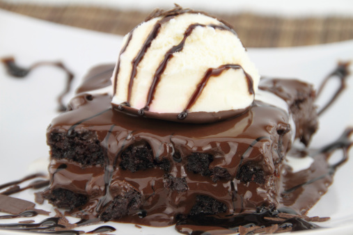

DreamRestaurant
4
stars - based on
250
reviews
345 Saint-Laurent
Montreal
,
QC
H4L 5P3
(438) 555-2368
www.DreamRestaurant.com
Hours:
Mon-Fri 11:30am - 3:00pm
Mon-Fri 6pm - 11:00pm
Sat 6pm - 11:00pm Categories:
Middle Eastern
,
Mediterranean
Price Range:
$$
Takes Reservations: Yes
dream restaurant
English
Accueil
Menu
Réservations
Commandez
Contactez-nous
A propos
Starter
Finger food
Les bouchées sont de petites portions individuelles d'aliments qui sont consommées à l'improviste. Ils sont souvent servis lors d'événements sociaux. La bouchée idéale ne crée généralement pas de gâchis (c'est-à-dire pas de miettes, de gouttes ou de tout type de gâchis), mais ce critère est souvent négligé dans afin d'inclure des aliments comme les tacos.[1] L'une des origines des amuse-gueules est le canapé français.
Spaghetti
Spaghetti Starter est généralement servi comme entrée, ou primo, en Italie, avant d'être suivi d'un plat principal à base de viande ou de poisson - le secondo. Comme cela collection démontre, italien les recettes de pâtes varient beaucoup, avec différentes formes de pâtes et sauces trouvées dans chaque région.

Squid Pieces
Ces tendres morceaux de calamars frits sont trempés dans du babeurre et puis enrobé de farine assaisonnée avant d'être frit à une couleur légèrement dorée.
Shrimp
Crevettes parfaitement succulentes délicatement enveloppées dans notre bacon mi-cuit. Une entrée incontournable en attendant votre plat principal !
Main Dishes

Poutine
La poutine est un repas savoureux composé de frites recouvertes de fromage en grains frais et d'un sauce épaisse et brune. Il est originaire de la province de Québec, mais est devenu un populaire nourriture partout au Canada. Pour certaines personnes, la poutine est la nourriture réconfortante par excellence. Le repas ressemble à un gros gâchis, mais il a du goût délicieux
Meat
Un plat de viande est un aliment préparé qui se compose entièrement ou en partie de viande. Les plats de viande sont considérés comme distincts des plats qui sont fruits de mer, poissons, insectes ou autres animaux. Plats à base de lait et d'œufs, bien qu'à base de produits d'origine animale, ils sont également considérés comme distincts des plats de viande.
Pasta
Les pâtes sont un type d'aliment généralement fabriqué à partir d'une pâte sans levain de farine de blé mélangée à l'eau ou des œufs, et formés en feuilles ou autres formes, puis cuits par ébullition ou cuisson.

Salmon
Le saumon est un poisson de consommation courante classé comme un poisson gras riche en protéines et en acides gras oméga-3
Vegetarian
Un régime végétarien se concentre sur les plantes pour se nourrir. Il s'agit notamment des fruits, des légumes, séchés haricots et pois, céréales, graines et noix. Il n'y a pas un seul type de régime végétarien. Au lieu de cela, les habitudes alimentaires végétariennes entrent dans les groupes suivants : Le régime végétalien, qui exclut toutes les viandes et tous les produits d'origine animale.

Indian Rice
Indian Rice (
भारतीय चावल
) est une variété de biryani indien qui est a cru avoir été savouré par les moghols Empereurs d'autrefois. Le plat est composé de riz aromatisé, de morceaux de viande épicée et rissolée (généralement de l'agneau), des oignons frits, des raisins secs et des fruits secs tels que des amandes, qui sont en couches un pot, puis cuits ensemble, donnant une spécialité très aromatique réputée digne d'un roi.
Gheimeh
Gheimeh (
قیمه
) est un ragoût iranien (khoresh) composé de dés viande de mouton, tomates, pois cassés, oignon et citron vert séché, garni de pommes de terre dorées croustillantes finement tranchées. Le ragoût est parfois garni d'aubergines frites et est généralement servi avec du riz blanc (polow).
Sushi
sushi (
すし
) , un plat de riz de base de la cuisine japonaise, composé de cuit riz aromatisé au vinaigre et une variété de garnitures de légumes, d'œufs ou de fruits de mer crus et servis froids. ... Pour les maki-zushi, une feuille de nori (laver, une algue) se tartine de riz, puis de fruits de mer ou de légumes et de garnitures.

Enchiladas
Dans cet incroyable plat d'enchiladas au piment vert, les tortillas de maïs sont remplies de piments verts rôtis et fromage, puis arrosés de salsa verde de tomatilles rôties.
Peculiar
C'est l'un de nos plats indiens les plus populaires dans notre restaurant ! Le plat est particulier la saveur provient d'un mélange spécifique d'épices qui a été affiné au fil du temps.
Drinks
Juice
Le jus est une boisson issue de l'extraction ou du pressage du liquide naturel contenus dans les fruits et légumes. ... Le jus est généralement consommé comme boisson ou utilisé comme ingrédient ou arôme dans des aliments ou d'autres boissons, comme pour smoothies.
Red Wine
Qu'est-ce que le vin rouge ? Commençons par les bases, le vin rouge est une boisson alcoolisée faite par fermenter le jus des raisins à peau foncée. Le vin rouge se distingue du vin blanc par sa matériel de base et processus de fabrication. Le vin rouge est fait avec des peaux foncées plutôt que des peaux claires les raisins.
Dessert
doughnut
Un beignet est un type de pâte frite levée. ... Une fois frits, les beignets peuvent être glacés avec un glaçage au sucre, tartiné de glaçage ou de chocolat, ou nappé de sucre en poudre, cannelle, arrose ou fruit. D'autres formes incluent des boules, des sphères aplaties, des torsions, et d'autres formes.

Sandwich
un biscuit sandwich léger, souvent de couleur vive, composé de deux arrondis disques fabriqués à partir d'un pâte de blancs d'œufs, de sucre et de farine d'amande entourant une garniture sucrée (comme de la ganache, crème au beurre, ou confiture) Notez que nous parlons ici du macaron parisien, deux biscuits aériens meringués aux amandes pressés autour d'un garniture crémeuse

Swirl
Un subtil tourbillon de framboises fraîches infuse ce ange fait maison gâteau alimentaire avec une légère saveur de fruits. Comme tous les gâteaux des anges, il n'a pas de matière grasse ou le cholestérol.

Brownies
Notre dessert le plus populaire est nos brownies au fudge et glace à la vanille. Le contraste des brownies chauds fraîchement préparés et la glace froide à la vanille est le moyen idéal pour terminer la nuit à notre le restaurant.
Apple Pie
Un autre de nos desserts populaires est notre délicieux tarte aux pommes! Cette la tarte fraîche est à double croûte avec de la pâte au-dessus et au-dessous de notre pomme remplissage.